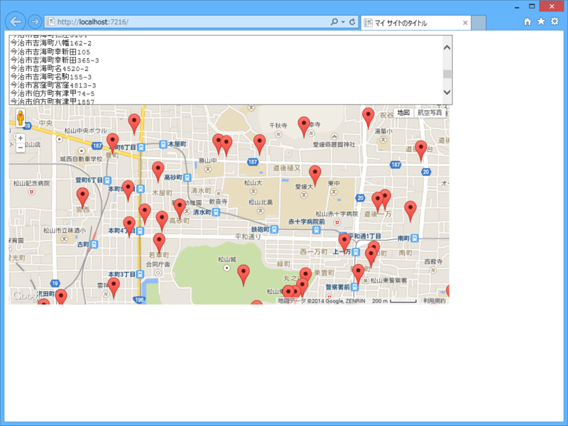

WebMatrix： @nakaji のコードをパクって「えひめFreeWi-Fi」スポットを Google Map へマッピング
公開日：
SGMLReaderで「えひめFreeWi-Fi」サービス提供箇所をスクレイピング - なか日記 を読んで存在を知った。
産学官で構成する愛媛県公衆無線LAN推進協議会では、外国人観光客や県内外の旅行者、地域住民等が無料で利用できるWi-Fiスポットの整備を民設民営で進めることにより、その利便性を確保し、愛媛県内の地域活性化を図る「えひめFreeWi-Fiプロジェクト」を推進しています。
“利便性を確保し”とか“地域活性化を図る”とかいってる割りには、クソ不便なテーブルデータしか用意してないのって、ほんとお役所だなーと思いますね。
というわけで、なかじが作ってくれたコードをまるパクリして、それを Google Map へマッピングしてみた。これで、ちょっとは利便性が向上するんじゃないだろうか。
マッピングのライブラリは、
をもらってきた。ちょっとコードが古いので、TypeScript で書き直したりしてみたい。
Web ページのコードはこんな感じ（spotList あたりのコードとか汚いけど）。WebMatrix（ASP.NET Web Pages）はこういう“ペライチ”のページを作るときに便利よね。
# ~/Default.cshtml@using System.Xml.Linq @using Sgml
@{ var urlString = "http://www.pref.ehime.jp/h12600/wifi/osirase260822.html";
XDocument xml; using (var sgml = new SgmlReader() { Href = urlString, IgnoreDtd = true }) { xml = XDocument.Load(sgml); }
var ns = xml.Root.Name.Namespace; var spots = xml.Descendants(ns + "table") .Last() .Descendants(ns + "tr") .Skip(1) // タイトルをスキップ .Select(e => e.Elements(ns + "td").ToList()) .Select(x => new { Place = x[1].Value, Address = x[2].Value, ServiceProvider = x[3].Value });
var spotList = string.Join("\r\n", spots.Select(_ => _.Address.Replace("−", "-")).ToArray()); }
<!DOCTYPE html>
<html lang="ja"> <head> <meta http-equiv="Content-Type" content="text/html; charset=utf-8"/> <meta charset="utf-8" /> <title>マイ サイトのタイトル</title> <link href="~/favicon.ico" rel="shortcut icon" type="image/x-icon" /> <script src="http://maps.google.com/maps/api/js?sensor=false"></script> <script src="http://ajax.googleapis.com/ajax/libs/jquery/1.10.0/jquery.min.js"></script> <script src="~/Scripts/sirusiizu.js"> </script> </head> <body>
<textarea id="addressList" style="width: 80%; height: 120px;">@spotList</textarea>
<div id="map" style="width: 80%; height: 360px;">
</div>
<script> sirusiizu.initialize("map"); sirusiizu.marking(document.getElementById("addressList").value); </script> </body> </html>

割とたくさんあるんやなー。
@daruyanagi 俺かやろうとしてたことを・・・(ToT)
— なかじ (@nakaji) 2014, 12月 16まじ申し訳ないけど、割とやっつけ仕事なので、キレイに仕上げてくれていいのよ？